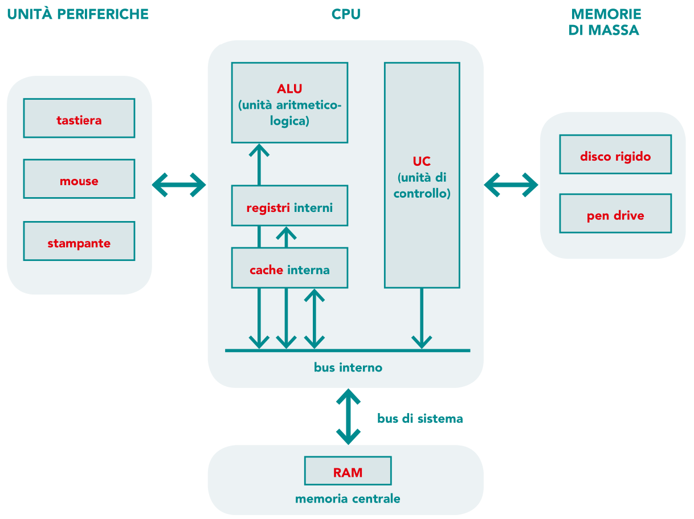

La comunicazione tramite i BUS

Che cosa sono i BUS?
I BUS sono componenti fondamentali all'interno dei computer e dei sistemi elettronici,
utilizzati per trasferire dati, indirizzi e segnali di controllo tra i vari componenti hardware.
Ogni tipo di BUS svolge una funzione specifica e permette ai vari elementi del sistema di comunicare tra loro in modo coordinato.
I principali tipi di BUS sono:
BUS dati: Questo BUS trasporta i dati veri e propri tra i componenti, come tra la CPU e la memoria
BUS indirizzi: Trasporta gli indirizzi di memoria a cui la CPU vuole accedere per leggere o scrivere dati.
BUS di controllo: Trasporta segnali di controllo che coordinano le attività tra i vari componenti del computer.
Possiamo suddividere i BUS in due categorie principali: sincroni e asincroni
BUS asincrono
BUS sincrono
Per regolare l'accesso a un BUS è necessario utilizzare un'operazione chiamata Arbitraggio del BUS
Poi abbiamo i BUS principali che sono: I BUS principali
Un esempio di BUS sono: Le periferiche plug and play e i bus di espansione
Infine poi per migliorare le caratteristiche delle CPU e i sistemi di elaborazione in generale furono create le architetture non von neumann